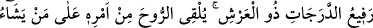
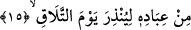
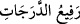

O’nun katındakiler sürüp gider dâima
Cenab-ı Hak da şöyle buyurur: “Sizin yanınızdaki, tükenir; Allah katındaki ise
bâkidir.” (en-Nahl 16/96)
Yüce Allah’tan ümidimiz, cümlemizi eksiksiz bir ihlâsın feyziyle ehl-i ihtisastan; yâni
kendisine has seçkin kullardan kılmasıdır.
15. Dereceleri yükselten, Arş’ın sahibi Allah, kavuşma günüyle korkutmak için
kullarından dilediğine iradesiyle ilgili vahyi indirir.
“Dereceleri yükselten:” “Derece,” “menzile” kelimesine benzer. Ancak uzunluk değil
de sadece yükseklik göz önüne alınacak olursa menzile, derece denir. Merdiven
basamakları ve satıh derecesi gibi. Bu görüş Rağıb’a âiddir.
Envâru’l-meşârık’ta da şöyle der: Derece lafzı “basamak” anlamındadır.
Âlimler “
” ifadesinin tefsirinde farklı görüşler serdetmişlerdir: Mesela
İrşad’da “Refî’u’d-deracât” terkibine, “Yüce Allah, meleklerinin derecesi yüksek olan,
yâni miraç ve karargahları ta Arş’a kadar yükselen bir zattır” mânâsı verilir. Ebu’l-
Leys tefsirinde şöyle der: “Refî’u’d-deracât” demek, “Allah, gökleri yaratıp sonra da
onları mutlak mânâda yâni biri diğerinin üzerinde ve birinin tabakasıyla diğerinin
tabakası arasında beş yüz sene olacak şekilde yüksek kılan” demektir.
Keşfü’l-esrar’da der ki: İster dünyada olsun ister âhirette kulların derecelerini
yükseltir. Dünyada yükseltmesi; yâni, birbirinizin derecesini yükseltti. Bir kısmınızı
ilimle, bir kısmınızı neseple, bir kısmınızı mal, bir kısmınızı şeref, bir kısmınızı sûret,
bir kısmınızı ses, bir kısmınızı da güçle. (En‘âm 6/165)
Bir başka yerde şöyle buyurdu: Onları bir kısmına izzet, mal ve maişette üstün kıldık.
Biri mâlik, biri memlûk, biri hâdim, biri mahdûm. Biri emir veren, biri emir alan.
(Zuhruf 43/32)
Ancak âhiret dereceleri ile ilgili olarak şöyle buyurdu: Kim ki dünyada mârifet ve tâat
açısından daha üstün ise, âhirette Hakk’a daha yakındır ve kerâmeti daha fazladır. (İsrâ
17/21) Yani, “Refî’u’d-deracât” dünyada farklı farklı bulunan tabakalara göre, âhirette
de yine mertebe ve makamlara göre dereceleri yükselten demektir.
Rivâyete göre, cennetliklerin en aşağı makamda olanına bile öyle bir nimet
bahşedilecek ki bu nimet dünyalık mülklerin on katına denk olacak. Böyle biri: “Ya
Rabbi!” diyecek, “bana izin versen de bütün cennetlikleri yedirip içirsem, bu ziyâfet
mülkümden hiçbir şey eksiltmez.” Böyle birine ayrıca, dünyadaki eşleri hariç, o ceylan